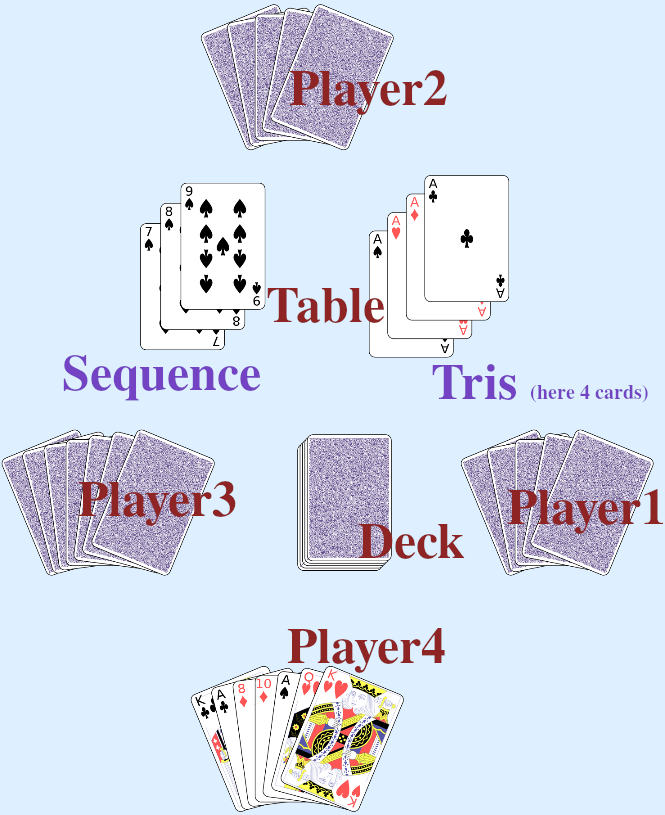
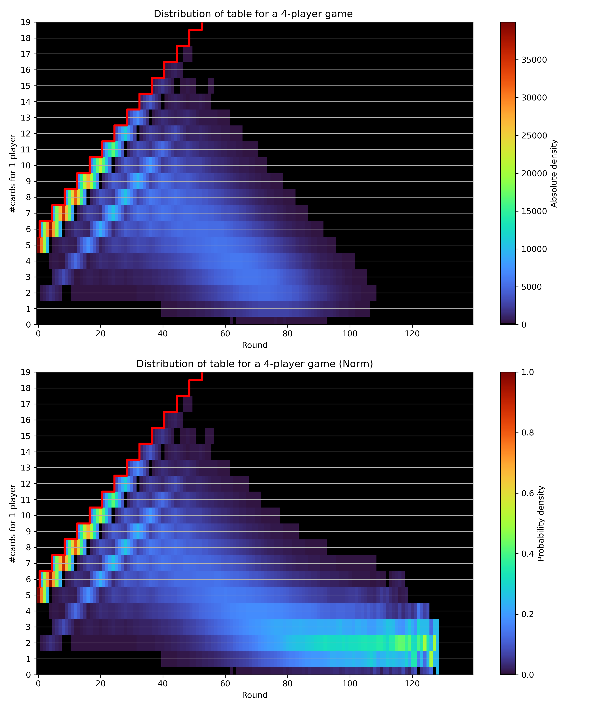

Machiavelli Statistics

This Python project uses a convex optimization solver for the Italian card game Machiavelli to perform statistical analysis on game outcomes based on strategies. The codes are based on the Machiavelli command-line game by Casey Duckering. Here, given starting hands, number of decks, and number of players, the game is then played between computers. The goal is to simulate e.g. a large amount of games to gain data on how well certain starting hands, e.g. only spades in hand, players starting with different numbers of cards, players hiding cards, etc... compete against others. It also produces the card distribution at each turn, showing how long a game on average lasts, what is a normal amount of cards to expect on each turn, etc.

The plot above shows the card distribution on each round for a player in a 4-player game with two 52 French cards decks. Starting hand are 5 cards. The distribution was created from 10k simulated games. The red step-line shows the maximum attainable cards for that round. The first rounds, players are mainly picking cards from the deck, and the most likely cards to shed are three of a kinds. In the middle section of the game, players are often just shedding one card per 4 rounds. The upper plot shows the absolute number of occurences, whereas the lower plot displays the number normalized for each round.
From the picture above one can read that a 4-player game ends after 70-90 rounds. The number of cards per hand peaks at 17 cards per hand, and then declines linearly after the 40th round. Very few games reach the 100th round, from where players usually just have 1 card per hand which they cannot discard, so they keep taking a card, and shed it in the next 4 rounds.
I found out that a game of Machiavelli takes about the same number of turns no matter the number of players. With turn I mean each time the action passes to another player. Results include:
- The worst hand in Machiavelli is half of the cards in the deck
- The maximum number of players for a 2 French deck Machiavelli is 8. Beyond 8 players, the chance of running out of cards is greater than 1%
- Players with equal cards have it harder to win
- ...